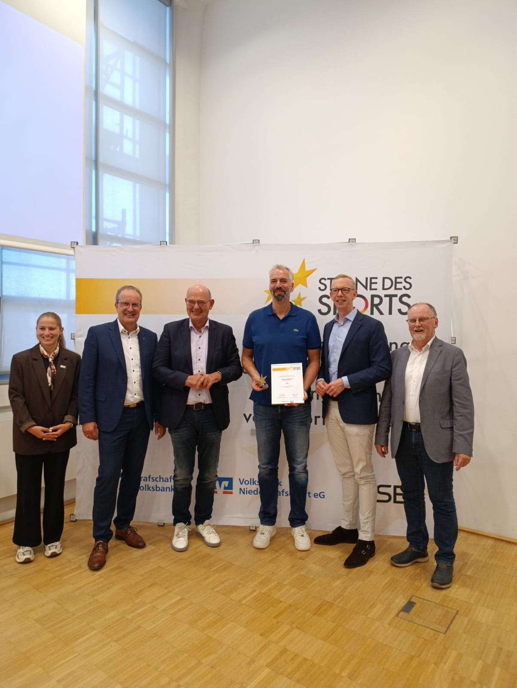
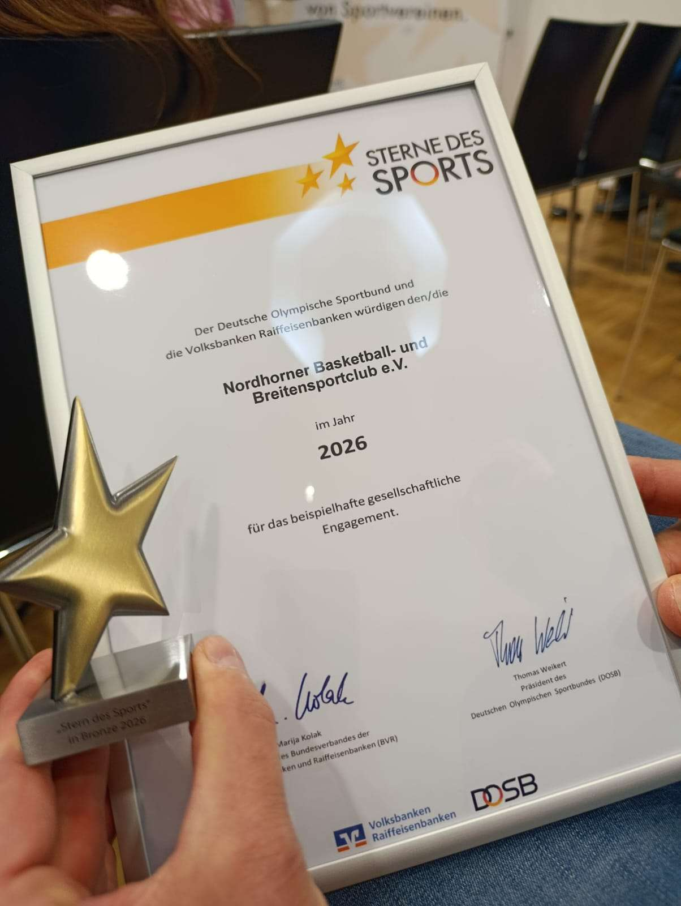
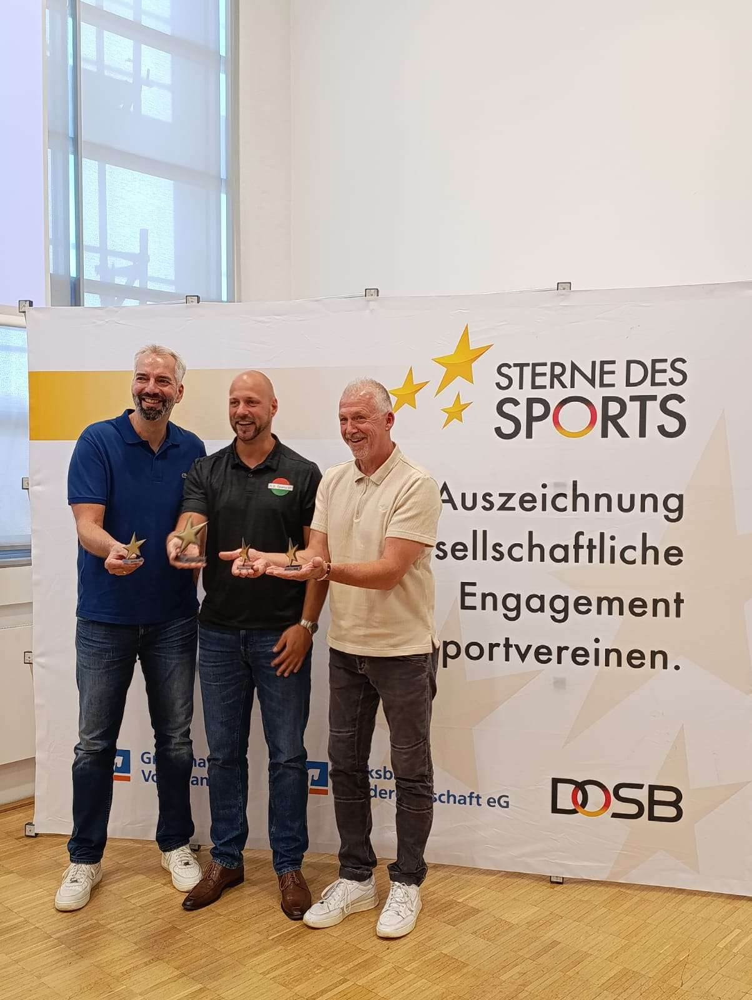

Foto: NBC Baskets Nordhorn
Die NBC Baskets Nordhorn freuen sich über eine besondere Auszeichnung: Bei der Preisverleihung der Sterne des Sports erreichte der Verein mit seinem Basketball-Ganztagsprojekt den 3. Platz.
Das Projekt bringt Basketball direkt an Nordhorner Schulen und schafft dort einen niedrigschwelligen Zugang zu Bewegung, Teamgeist und Vereinsbasketball. Was einst mit Patrick Olliges an zwei Schulen begann, wird in diesem Schuljahr von Jegor Cymbal erfolgreich weitergeführt.
Cymbal, zweifacher Meister der 2. Basketball-Bundesliga, ist inzwischen an vier Nordhorner Schulen aktiv. Woche für Woche begeistert er Kinder für Basketball und zeigt, wie stark die Verbindung zwischen Schule, Verein und Sport wirken kann.
Starke Anerkennung für das Ganztagsprojekt
Vertreten wurde der NBC bei der Siegerehrung von Simon Sperling. Der Verein bedankt sich herzlich für seinen Einsatz und für die würdige Vertretung bei der Veranstaltung.
Ein großer Dank gilt außerdem den Veranstaltern, insbesondere der Grafschafter Volksbank, für die Ausrichtung und die Wertschätzung des Projekts.


Basketball in Bewegung
Die Auszeichnung ist eine starke Motivation, Basketball in Nordhorn weiter in die Schulen zu tragen und noch mehr Kinder für unseren Sport zu begeistern.